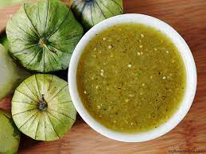

Salsa Verde

Salsa Verde for excellent chip-dipping
What can I say? When it comes to easy and satisfying quick-food, this is a staple. Quick and easy to make. This salsa verde packs a little heat that starts off slowly
the moment it makes contact with your tongue and ultimately finishing nicely leaving a subtle reminder of what you just enjoyed. Keep an eye on the chips; they're going to go quick!
Ingredients
- 7 tomatillos
- 3 green jalapenos
- 3+ cloves of garlic
- 1 head cilantro
- 2 teaspoons salt, pepper, and garlic powder
Steps
- Boil the tomatillos, jalapenos, and garlic for no more than 10-15 minutes MAX.
- Add to the blender along with: 1 head cilantro and seasonings.
- Pulverize until completely pureed.